Histoire de la programmation
Un peu d’histoire
Les premières années de l’informatique remontent vers 1890, lorsque Herman Hollerith (futur fondateur d’IBM) dépose un brevet pour une machine à calculer en se basant sur les travaux de Charles Babbage et Ada Lovelace (1842). L’objectif était d’aider au recensement des Etats-unis en automatisant les calculs, car à cette époque le recensement était réalisé tous les dix ans et nécessitait neuf ans de travail.
Les machines à calculer, appelés tabulatrices étaient électro-mécaniques et disposaient de programmes “fixes” : la machine contenait un panneau de contrôle, dans lequel le fabriquant avait “écrit” les instructions en suivant un schéma de câblage. Une machine à calculer était grosse comme un bureau et ne pouvait exécuter qu’un seul programme. Les données étaient saisies sur des cartes perforées et lues en direct par la machine. La carte perforée était lue via des aiguilles qui passaient (ou non) au travers des perforations, puis atterissaient dans un bain de mercure pour fermer un circuit électrique.

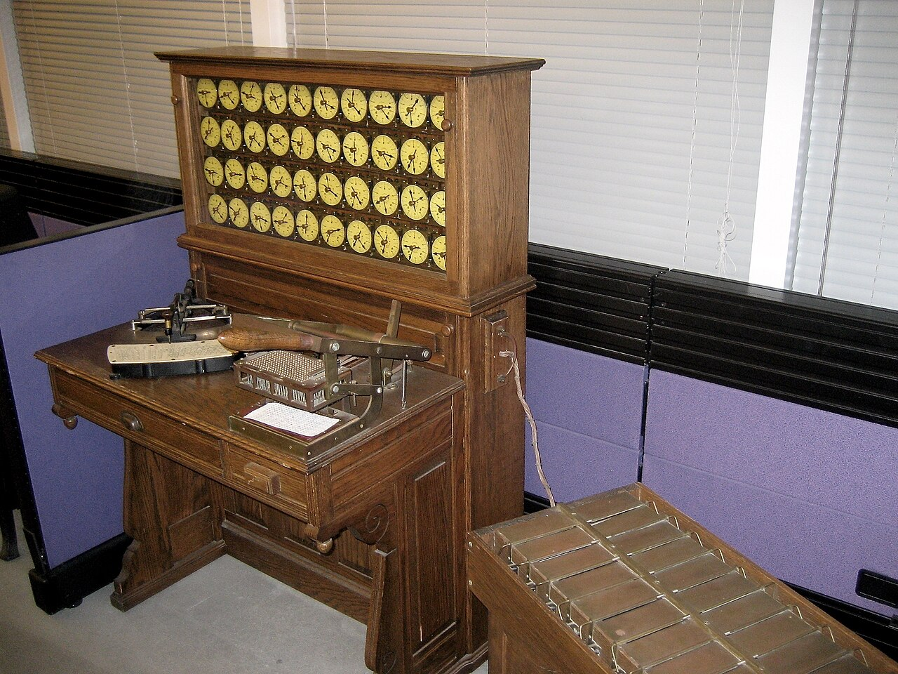
Par la suite, des panneaux de contrôle amovibles sont apparus : pour changer de programme informatique, on changeait le panneau de contrôle.
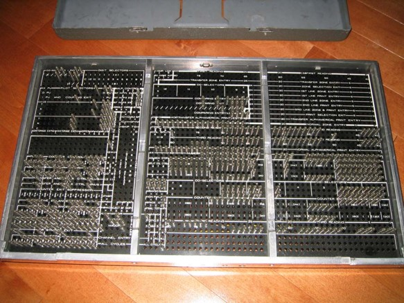
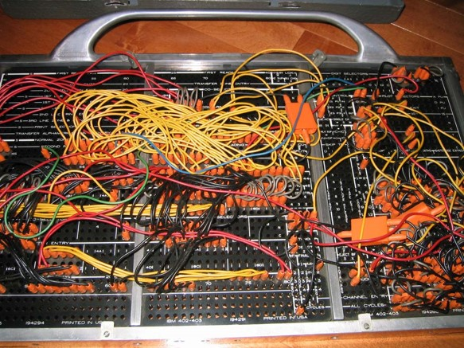

Dans les années 1960, l’arrivée des transistors permet le début des sytèmes 100% électriques, on change alors de paradigme : un processeur unique permet de faire tous les calculs, et l’utilisateur définit le programme. Cependant, les ordinateurs ne disposent pas encore de mémoire pour se souvenir des différentes étapes d’un programme, le code était alors lui aussi écrit sur des cartes perforées.
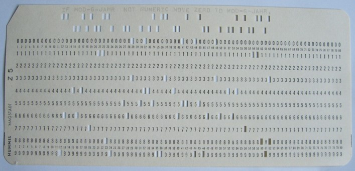
Les cartes perforées ont été utilisées jusqu’à la fin des années 70, voire même plus tard. L’arrivée des supports de mémoire magnétiques (floppy disks, disquettes, clés USB, etc…) a permit de les remplacer.
La question que l’on se pose alors est “Comment ces instructions, sous forme de lettres, permettent à des circuits électriques de faire des calculs ?”
Pour comprendre cela, il faut d’abord expliquer comment les commandes d’un langage de programmation sont lues par l’ordinateur.
Prenons la commande R suivante : print(“Hello World!”) Lorsque l’on va demander à l’ordinateur d’exécuter cette ligne, il va d’abord la traduire en code machine, composé de 0 et de 1 : c’est la compilation. Le code machine est illisible pour les humains, mais est en fait la traduction du code en Assembleur : un langage partagé par tous les processeurs, et qui décompose chaque fonction en une suite d’instructions basiques. > Cette explication est très simplifiée, mais il serait trop complexe de tout détailler ici
Ce que l’on appelle “0 et 1” sont des bits : la plus petite unité d’information possible. Dans un circuit électrique 1 = du courant électrique qui passe, 0 = un courant très faible
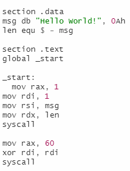
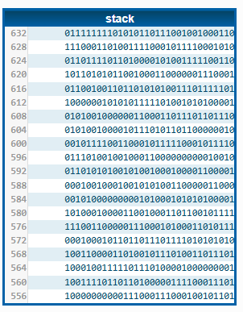
MOV, RAX ou RDI sont des “opcodes” (Operation Code) : ce sont des instructions très simples, envoyées au processeur. Un peu à la manière des codons dans l’ADN, ils indiquent ce qui vient après eux. Par exemple, un codon d’initiation dans l’ADN indique le début d’une séquence codante et initialise la traduction de ce qui vient après, jusqu’à rencontrer un codon STOP. Ici, l’opcode MOV sera toujours suivi d’un autre opcode, et RAX est toujours suivi d’une valeur : c’est comme cela qu’on peut traduire des instructions en une suite de 0 et 1
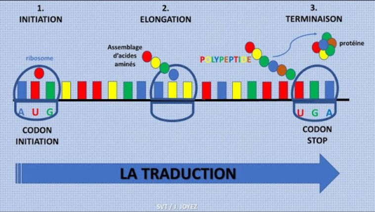
Les OPCODES sont comme des codons : ils indiquent une action. 0 et 1 sont comme les nucléotides Tout comme les nucléotides sont regroupés par 3 pour former des acides aminés, les bits (0 et 1) se rassemblent par groupes (souvent de 8) pour former des octets.
Le binaire
Pour bien comprendre comment des instructions comme “MOV”,“RAX” ou des valeurs comme 20 ou 60 sont transformées et lues sous formes de bits, il faut comprendre le système binaire.
Au quotidien, on utilise le système décimal : 10 chiffres (0 à 9), puis on passe à une dizaine (10). Le système binaire fonctionne de la même manière, mais n’utilise que 1 et 0. Ainsi, pour compter 0,1,2,3,4,5 en binaire cela donne 0,1,10,11,100,101. On peut visualiser plus facilement ce système avec des cases :
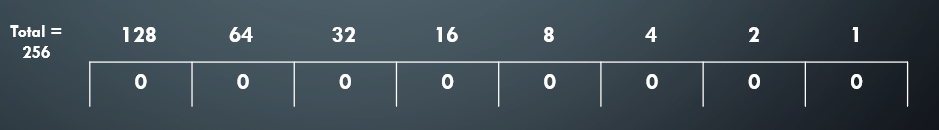
Pour stocker des informations, les bits sont regroupés par paquets appelés “multiplets”. Le plus utilisé est le multiplet de 8 bits : l’octet. Sur l’image ci-dessus, on voit l’octet 00000000. Chaque case correspond à une valeur décimale qui correspond à une dizaine supplémentaire en binaire. Pour écrire le nombre 20, la seule manière de l’écrire ici est 16+4, donc “0-0-0-1-0-1-0-0” => 00010100
Le code machine fonctionne ainsi : on sait qu’il fonctionne toujours par un opcode, qui indique ce qui le suivra (un opcode ou une valeur), et chaque groupe de 8 bits compose une brique d’information. > Exemple : le code 01101010 00010100 correspond à l’opcode PUSH (garder une valeur en mémoire), suivi de la valeur 20.
Se pose alors une dernière question : comment un opcode peut indiquer à un circuit électrique ce qu’il doit faire des informations données ?
Les transistors et portes logiques
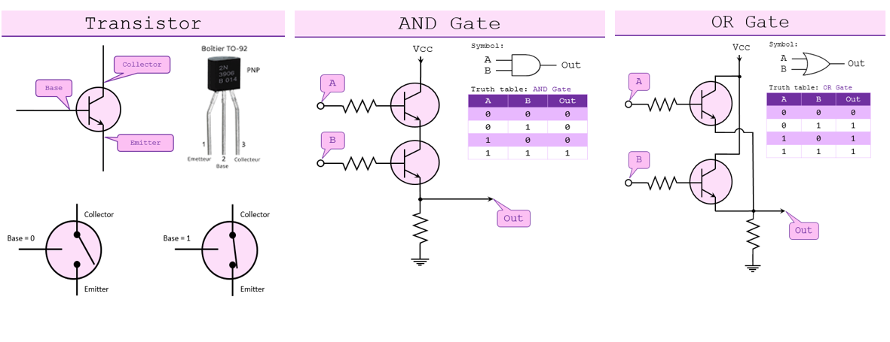
Un transistor permet d’ouvrir ou fermer un circuit électrique : si on lui envoie un fort courant, il le laisse passer, si c’est un courant faible, il bloque l’arrivée. Pour définir les courants entrants et sortants, on parle d’inputs et d’outputs : 1 lorsque le courant passe, 0 lorsqu’il ne passe pas.
L’intérêt du transistor arrive lorsqu’il est combiné : il est possible de créer différents types de “portes” :
- AND : renvoie 1 si les inputs sont 1-1
- OR : renvoie 1 si au moins l’un des deux inputs contient 1 (“l’un ou l’autre”)
- XOR : renvoie 1 si les inputs sont 1-0 ou 0-1 (“Soit l’un, soit l’autre” = ou exclusif)
- NOT : renvoie 1 si les inputs sont 0-0
- NAND : renvoie 1 si les inputs ne sont pas 1-1
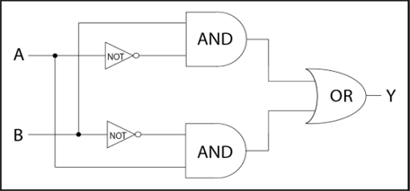
Ces montages simples permettent d’effectuer des opérations complexes lorsqu’on les combine à nouveau :
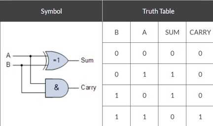
Essayez d’expliquer le fonctionnement de ce montage
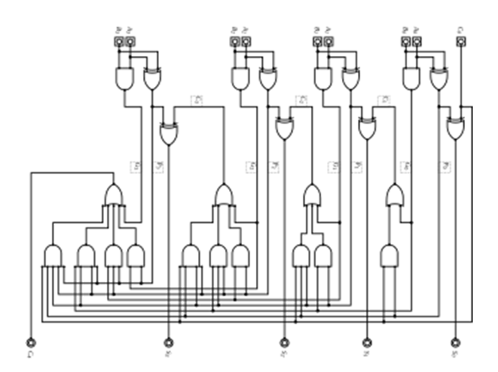
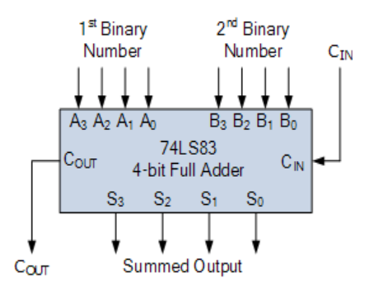
Un “Full adder” est un montage permettant d’effectuer une addition de deux nombres composés de 4 bits (de 0 à 8). La retenue valant 8, on peut calculer jusqu’à 8+8=16.
Il existe différents montages de ce type pour effectuer les calculs de base d’un ordinateur : les adder, substracter, incrementer, decrementer, etc…
Les processeurs les plus récents mesurent environ 4x4cm et contient plus de 40 milliards de transistors, d’environ 7nm (70 atomes), avec une fréquence de 5GHz. Les ordinateurs actuels fonctionnent avec des architectures en 64 bits.
Lorsque du code est exécuté sur un ordinateur, il est d’abord traduit en assembleur. Le code assembleur est lisible par les humains, et est l’équivalent du code binaire qui sera lu par la machine (C’est le code machine)
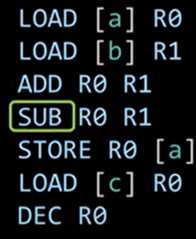 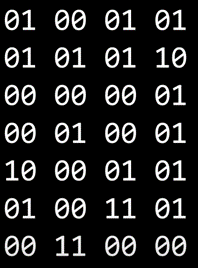
Dans le code binaire, les 4 premiers chiffres correspondent à l’opcode : l’action à effectuer. Les deux premiers indiquent le type d’opération (charger une valeur, la stocker, faire une opération arithmétique), et les deux suivants indiquent laquelle.
Exemple : 00 = arithmétique, 00 01 = soustraction
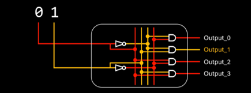
Un Binary Decoder est un aiguilleur qui renvoie les informations vers les différents montages. Ici, le 01 correspond à l’opération “soustraction”, et renvoie vers la 2e sortie.
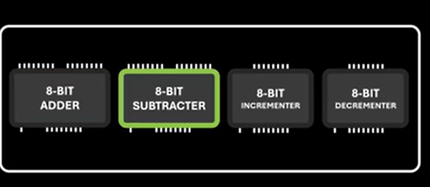
La mémoire magnétique
Comme expliqué précedemment, les premiers ordinateurs ne comportaient pas de mémoire, et exécutaient une suite d’instructions à partir de cartes perforées.
A partir du milieu des années 50, on voit apparaître deux méthodes de stockage de mémoire : les mémoires “à chaines de tores” et “à tores magnétiques”, qui ont notamment été utilisées par la NASA pour la mission Apollo 11.

La mémoire à chaines de tores (core rope memory) permettait de stocker des données fixes, donc non modifiables. Elle servait notament à stocker les instructions d’un programme. La capacité de stockage était de 72KB pour 30cmx30cmx30cm (~ 30 litres). Cette mémoire fonctionne en faisant passer un fil électrique au travers d’anneaux magnétiques. Si le fil passe dans l’anneau: 1, s’il passe hors de l’anneau : 0. Cette technologie était surnommée “LOL memory”, pour Little Old Ladies, car les fils étaient tressés à la main par des travailleuses, souvent ayant une expérience de couturières.


La mémoire à tores magnétiques fonctionne sur un principe différent : les anneaux sont polarisés, et un courant électrique permet de changer leur valeur (0 > 1 ou 1 >0). D’autres fils passent à travers le maillage pour lire la polarité des anneaux ou les réinitialiser.
Cette technologie était particulièrement pratique pour stocker en temps réel les données renvoyées par des instruments, mais bien moins efficace en terme de stockage (4KB pour une grille de 30cmx30cm)
L’ordinateur à bord de la mission Apollo 11 (Apollo Guidance Computer pesait 32Kg, avait une mémoire vive de 2.048 mots et une mémoire dure de 36.684 mots, pour un total de 22.400 transistors et une fréquence de 2 MHz. Les meilleurs ordinateurs actuellent embarquent des processeurs de 4x4cm contenant 40 milliards de transistors, avec une fréquence de 5 GHz et une mémoire de plusieurs Teraoctets
Sources
Cartes perforées
Page wikipédia : En français - En anglais
Mémoire magnétique
Page wikipédia : Tores magnétiques - Chaînes de tores
Tabulatrices
Page wikipédia : En français - En anglais
Université Columbia : - Panneaux de controles des tabulatrices
Transistors
Site du lycée Saint François-Xavier Fonctionnement des transistors
Vidéo YouTube : How transistors run code ?
Vidéo YouTube : La traduction de l’ADNm en protéines